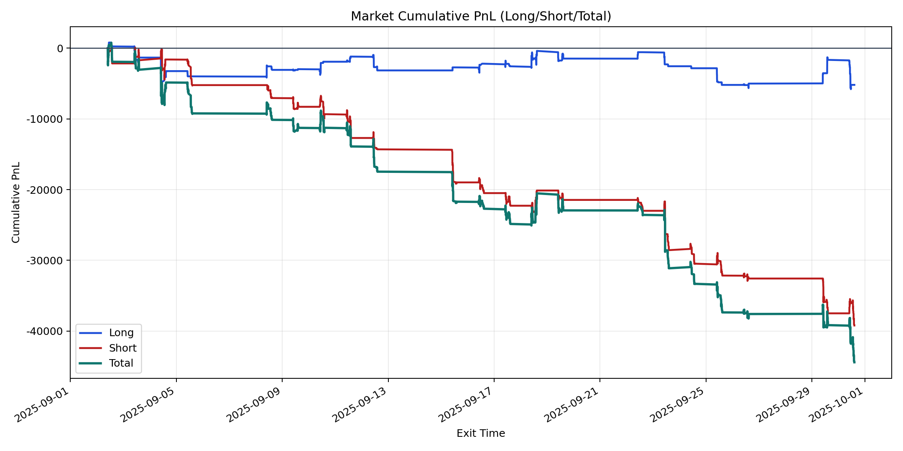
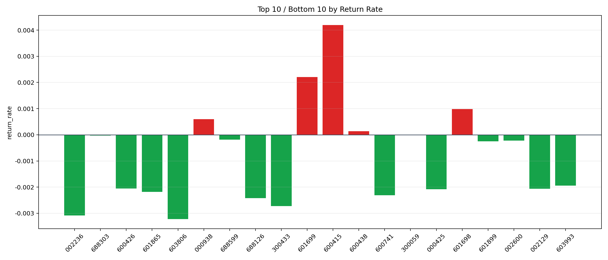

| repo_root | /home/haoranyou/data/output/dynamic_AUM_TAKER_index300 |
|---|---|
| period_months | 1 |
| period_label | 2025-09-02_to_2025-09-30 |
| start_time | 2025-09-02 09:49:47 |
| end_time | 2025-09-30 14:28:22 |
| n_trades | 3486 |
| n_symbols | 41 |
| total_pnl | -44401.306700000336 |
| long_total_pnl | -5197.2632999995685 |
| short_total_pnl | -39204.04340000076 |
| total_entry_notional | 62167357.0 |
| long_entry_notional | 22458697.0 |
| short_entry_notional | 39708660.0 |
| total_return_rate | -0.0007142222034628292 |
| long_return_rate | -0.00023141428463100812 |
| short_return_rate | -0.0009872920264748484 |
| top_symbols_by_return | ["600415", "601699", "601698", "000938", "600438", "300059", "688303", "688599", "002600", "601899"] |
| bottom_symbols_by_return | ["603806", "002236", "300433", "688126", "600741", "601865", "000425", "002129", "600426", "603993"] |

